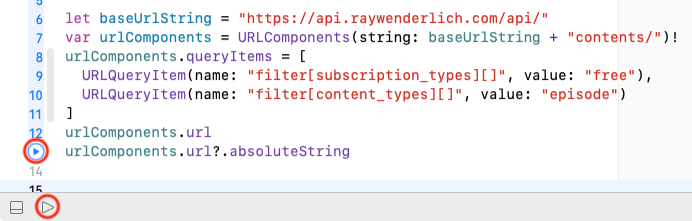
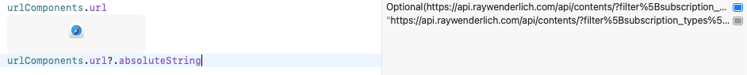
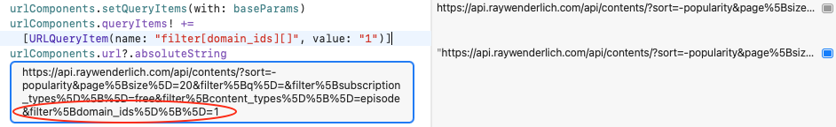
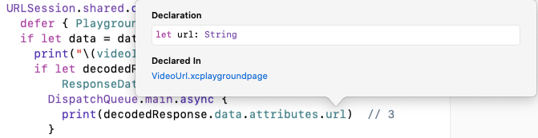
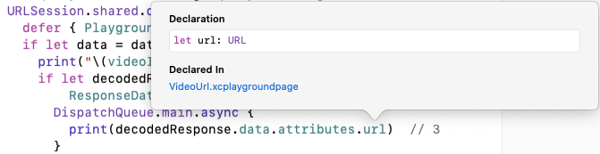
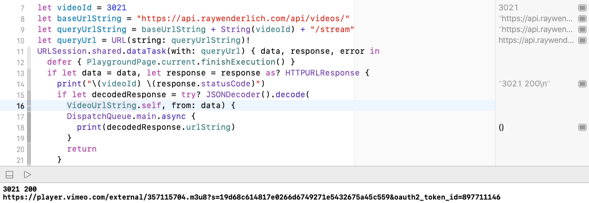

Chapter 24: Downloading Data¶
Most apps access the internet in some way, downloading data to display or keeping user-generated data synchronized across devices. Your RWFreeView app needs to create and send HTTP requests and process HTTP responses. Downloaded data is usually in JSON format, which your app needs to decode into its data model.
If your app downloads data from your own server, you might be able to ensure the JSON structure matches your app’s data model. But RWFreeView needs to work with the raywenderlich.com API and its JSON structure, which is deeply nested. So in this chapter, you’ll learn two ways to work with nested JSON.
Getting started¶
Open the Networking playground in the starter folder and open the Episode playground page. If the editor window is blank, show the Project navigator (Command-1) and select Episode there.

Playgrounds are useful for exploring and working out code before moving it into your app. You can quickly inspect values produced by methods and operations, without needing to build a user interface or search through a lot of debug console messages.
The starter playground contains two playground pages and extensions to DateFormatter and URLComponents.
Asynchronous functions¶
URLSession is Apple’s framework for HTTP messages. Most of its methods involve network communication, so you can’t predict how long they’ll take to complete. In the meantime, the system must continue to interact with the user.
To make this possible, URLSession methods are asynchronous: They dispatch their work onto another queue and immediately return control to the main queue, so it can respond to user interface events. When you call the method, you supply a completion handler. This runs when the network task completes to process the response from the server.
Note: URLSession and the broader topic of concurrency have their own video course at bit.ly/3x6Z8hN, and there’s also a book, Concurrency by Tutorials, at bit.ly/3n0BSgF.
Because asynchronous tasks appear to finish immediately, the Episode and VideoURL playground pages contain the following code so the playground doesn’t stop execution before an asynchronous task completes:
import PlaygroundSupport
PlaygroundPage.current.needsIndefiniteExecution = true
Creating a REST request¶
A REST request is a URL with query parameters. In the previous chapter, you saw the URL-encoded URL for a typical contents query:
https://api.raywenderlich.com/api/contents?filter%5Bsubscription_types%5D%5B%5D=free&filter%5Bdomain_ids%5D%5B%5D=1&filter%5Bcontent_types%5D%5B%5D=episode&sort=-popularity
This URL lists query parameter names and values after the ? separator.
In this playground, you’ll create this REST request for free iOS & Swift episodes, sorted by popularity. Your approach will be flexible, so you can easily change the query parameter values.
Many of the query parameter names, like filter[domain_ids][] contain brackets, which must be URL-encoded to %5B and %5D. You’ll need to create URLs like this in your app, and you certainly don’t want to do the URL-encoding yourself! Fortunately, you can hand this work over to URLComponents and URLQueryItem.
URLComponents¶
The URLComponents structure enables you to construct a URL from its parts and, also, to access the parts of a URL. Components include scheme, host, port, path, query and queryItems. The url itself gives you access to URL components like lastPathComponent.
➤ Add this code to the Episode playground:
let baseURLString = "https://api.raywenderlich.com/api/"
var urlComponents = URLComponents(
string: baseURLString + "contents/")!
urlComponents.queryItems = [
URLQueryItem(
name: "filter[subscription_types][]", value: "free"),
URLQueryItem(
name: "filter[content_types][]", value: "episode")
]
urlComponents.url
urlComponents.url?.absoluteString
You set the URL string for the API’s base endpoint and add the contents endpoint to create a URLComponents instance. Then, you create an array of URLQueryItem values. The URLQueryItem parameters are the parameter names and values you used in the previous chapter to construct your RESTed request.
The last line displays the final URL string in the sidebar. The line above it displays the final URL. What’s the difference? Time to find out!
Note: In a playground, you can write an expression on its own line to display its value.
➤ Click the Execute Playground arrow on the last line number or at the bottom of the playground:

Note: Clicking the arrow next to a line of code runs the playground only up to that line.
The sidebar displays values for some lines with buttons for Quick Look and Show Result.
➤ Click the Show Result button of the last code line and resize the display window that appears below the code line:

"https://api.raywenderlich.com/api/contents/?filter%5Bsubscription_types%5D%5B%5D=free&filter%5Bcontent_types%5D%5B%5D=episode"
Thanks to urlComponents, your queries are safely URL-encoded and appended to the base URL.
➤ Now look at the url on the line above. Notice it’s not in quotation marks, because it’s not a String. In fact, it’s an Optional. Click its Show Result button:

The playground tries its best to open the URL.
You can create a URL from a String, if the String has all the right parts. Then, you can access these parts as properties of the URL instance: host, baseURL, path, lastPathComponent, query etc.
If you try to create a URL from a String that wouldn’t work in a browser, the initializer returns nil. That’s why urlComponents.url is an Optional and there’s a url? in the last code line: If url is nil, it doesn’t have an absoluteString property.
➤ Click their Hide Result buttons to close the result windows.
Note: You can also use print(urlComponents.url?.absoluteString) to see the printed value in the Debug area below. If you’re not able to see the Debug area, click the button next to the Run/Stop button or press Shift-Command-C.
URLComponents helper method¶
URLQueryItem makes it easy to add a query parameter name and value to the request URL, but your app provides lots of options for users to customize downloaded contents. And almost every selection and deselection requires a new request. You’ll be writing a lot of code to add query items.
The name and value arguments of URLQueryItem look like dictionary key and value items, so it’s easy to create a dictionary of parameter names and values, then transform this dictionary into a queryItems array. It’s especially easy when Alfian Losari has already done it in bit.ly/3pRtT6t. :] It’s in Networking/Sources/URLComponentsExtension.swift in this playground.
➤ Replace the urlComponents.queryItems definition with:
var baseParams = [
"filter[subscription_types][]": "free",
"filter[content_types][]": "episode",
"sort": "-popularity",
"page[size]": "20",
"filter[q]": ""
]
urlComponents.setQueryItems(with: baseParams)
You create a dictionary whose keys are query parameter names. The first two are fixed: You always want to download free episodes.
You include sort, page size and q (search term) because these are single-value options. They have default values, and this dictionary lets you easily change their values. For example:
// when user changes page size
baseParams["page[size]"] = "30"
// when user enters a search term
baseParams["filter[q]"] = "json"
The setQueryItems(with:) helper method defined in the URLComponents extension creates a URLQueryItem for each dictionary item and sets the queryItems array of the URLComponents instance. In the next chapter, you’ll append other query items to this array.
➤ Replace urlComponents.url with this line:
urlComponents.queryItems! +=
[URLQueryItem(name: "filter[domain_ids][]", value: "1")]
You request only episodes in the “iOS & Swift” domain.
You don’t include this query parameter in baseParams because you can add more than one domain_id query item to a RESTED request URL.
The queryItems array is an optional, in case urlComponents doesn’t have any queryItems component. But, you just created the queryItems component, so it’s safe to force-unwrap it.
➤ Execute the playground and show the absoluteString result:

Now you’re all set to send the request URL to the raywenderlich.com API server.
URLSessionDataTask¶
➤ Add this code below the absoluteString line:
let contentsURL = urlComponents.url! // 1
// 2
URLSession.shared
.dataTask(with: contentsURL) { data, response, error in
defer { PlaygroundPage.current.finishExecution() } // 3
if let data = data,
let response = response as? HTTPURLResponse { // 4
print(response.statusCode)
// Decode data and display it
}
// 5
print(
"Contents fetch failed: " +
"\(error?.localizedDescription ?? "Unknown error")")
}
.resume() // 6
- You assign the
urlproperty ofurlComponentstocontentsURL. In this playground, you know this is a valid URL, so it’s safe to force-unwrap it. When this code is in a method, you would do this assignment in aguardstatement and exit if the value isnil. - You create a
dataTaskwithcontentsURL. For simple requests like this, thesharedsession with default configuration works fine. You can create a session with a custom configuration. For example, here’s how you create a session that waits 300 seconds for a network connection:
let config = URLSessionConfiguration.default
config.waitsForConnectivity = true
config.timeoutIntervalForResource = 300
let session = URLSession(configuration: config)
- The
deferstatement stops playground execution when thedataTaskhandler completes. This is convenient when the code is the last thing executed in a playground page. - You supply a completion handler. When the task completes, this handler receives three arguments. You usually name them
data,responseanderror. All three are optionals, so you must unwrap them. Completion handlers usually checkresponse.statusCodethen decodedata. - You print the
error, if it exists, or “Unknown error”. A common source of “Unknown error” is a failure to decodedata. URLSessiontasks are created in a suspended state, so you must callresume()method to start them. This step is easy to forget, even for experienced iOS developers. ;]
What about that comment Decode data and display it after you print the status code? Most of the rest of this chapter helps you do that. If you run this code now, you’ll get “Unknown error” because you haven’t decoded data yet.
Fetching a video URL¶
To display a video, you actually need to run two download requests. The one you’ve just added to the Episode playground fetches an array of contents items.
One of the contents item attributes is video_identifier. It’s an integer like 3021. You’ll use it to fetch the URL string of the item’s video.
➤ In the VideoURL playground page, add these lines of code:
let videoId = 3021
let baseURLString = "https://api.raywenderlich.com/api/videos/"
let queryURLString = baseURLString + String(videoId) + "/stream"
let queryURL = URL(string: queryURLString)!
URLSession.shared
.dataTask(with: queryURL) { data, response, error in
defer { PlaygroundPage.current.finishExecution() }
if let data = data,
let response = response as? HTTPURLResponse {
print("\(videoId) \(response.statusCode)")
// Decode response and display it
}
print(
"Videos fetch failed: " +
"\(error?.localizedDescription ?? "Unknown error")")
}
.resume()
You create the query URL and the dataTask code to send it, then print the response status code. Then, you need to Decode response and display it.
The JSON response for this query is simpler than for the contents query, so you’ll decode this first.
Decoding JSON¶
If there’s a good match between your data model and a JSON value, the default init(from:) of JSONDecoder is poetry in motion, letting you decode complex structures of arrays and dictionaries in a single line of code. Unfortunately, api.raywenderlich.com sends a deeply-nested JSON structure that you probably won’t want to replicate in your app. So, it’s time to learn more about CodingKey enumerations and custom init(from:) methods.
Note: Dive deeper into JSON with our tutorial Encoding and Decoding in Swift bit.ly/3bqsrBY.
Decoding JSON that (almost) matches your data model¶
In Chapter 19, “Saving Files”, you saw how easy it is to encode and decode the Team structure as JSON because all its properties are Codable. You were saving and loading your app’s own data model, so item names and structure in JSON format exactly matched your Team structure.
JSON values sent by real-world APIs rarely match the way you want to name or structure your app’s data.
If the JSON structure matches your app’s data model, but the JSON names use snake_case while your property names use camelCase, you just tell the decoder to do the translation:
let decoder = JSONDecoder()
decoder.keyDecodingStrategy = .convertFromSnakeCase
This takes care of translating JSON names like released_at and video_identifier to property names releasedAt and videoIdentifier.
If the JSON structure matches your app’s data model, but some of the names are different, you simply have to define a CodingKey enumeration to assign JSON item names to your data model properties. For example, Episode has a description property, but the matching JSON item’s name is description_plain_text:
enum CodingKeys: String, CodingKey {
case description = "description_plain_text"
case id, uri, name, ...
}
Unfortunately, as soon as you create a CodingKey enumeration for one property name, you must include all the property names, even those that already match JSON item names.
Decoding nested JSON¶
Most of the time, the structure of JSON sent by an API is very different from the way you want to organize your app’s data. This is the case with api.raywenderlich.com, where the values you want to store in an episode are nested one or more levels down in the JSON value. And fetching the video URL string requires a separate request to a different endpoint.
Even the videos request has this problem. All you want is the "url" value, but it’s buried in a nested JSON structure.
➤ Send this request with RESTed, or use the Try console of the /videos/{video_id}/stream endpoint at raywenderlich.docs.apiary.io.
https://api.raywenderlich.com/api/videos/3021/stream
You get this response body:
{
"data": {
"id": "32574",
"type": "attachments",
"attributes": {
"url": "https://player.vimeo.com/external/357115704...",
"kind": "stream"
}
}
}
The JSON value contains a dictionary named "data". The value of its "attributes" key is another dictionary, and the value of the "url" key is the URL string you want to store in your Episode instance.
There are two approaches to decoding nested JSON:
- Define your data model to mirror the JSON value.
- Flatten the JSON value into your data model.
You’ll do it the first way to see how nifty automatic JSON decoding can be. Then you’ll do it the second way, because that’s how you’ll do it in your app. In exchange for more decoding work, you’ll get sensible data structures that are easier and more natural to work with.
Making the data model fit the JSON¶
➤ In the VideoURL playground page, set up these structures to mirror the JSON value’s hierarchy:
struct ResponseData: Codable {
let data: Video
}
struct Video: Codable {
let attributes: VideoAttributes
}
struct VideoAttributes: Codable {
let url: String
}
You create separate structures with data, attributes and url properties. The relationships between these structures match the nesting of the JSON value’s "data", "attributes" and "url".
➤ In the completion handler for the queryURL dataTask, replace the Decode response and display it comment with this code:
if let decodedResponse = try? JSONDecoder().decode( // 1
ResponseData.self, from: data) { // 2
DispatchQueue.main.async {
print(decodedResponse.data.attributes.url) // 3
}
return
}
- You don’t need to configure
JSONDecoderfor this task, so you just create one inline. - You decode the top level
ResponseData, and this gives you access to itsdata.attributes.urlproperty. - You run the
printstatement on the main queue. This isn’t really necessary in a playground, but is essential in an app. You usually do something in thedataTaskhandler to update the user interface, and all UI updates must run on the main queue.
➤ Run the playground.

The URL string appears in the debug area, and playground execution stops.
Note: You must run the whole playground if you added the ResponseData and other structures below the URLSession code. They’re not “visible” if you click the run button on the resume() line.
➤ Option-click url:

Its type is String, as you’d expect.
➤ In VideoAttributes, change the type of url:
let url: URL
➤ Run the playground again, then check the type of url:

This is one of the nifty JSONDecoder automagic tricks: It created a URL from the JSON string value.
The downside of this approach comes when you need to use url in your app. You don’t really want to have to create a ResponseData instance for every video. It’s much more natural to include it as one of the Episode properties.
Flattening the JSON response into the data model¶
In Chapter 19, “Saving Files”, you wrote a CodingKey enumeration and a custom init(from:) to decode a Double value that you then used to initialize an Angle. In this section, you’ll use CodingKey enumerations and a custom init(from:) to navigate through the levels of the JSON value and extract the items you need.
Here’s the JSON value again:
{
"data": {
"id": "32574",
"type": "attachments",
"attributes": {
"url": "https://player.vimeo.com/external/357115704...",
"kind": "stream"
}
}
}
Think of "data" as a container inside the top-level container.
➤ Comment out the ResponseData, Video and VideoAttributes structures, then add this code:
struct VideoURLString {
// data: attributes: url
var urlString: String
enum CodingKeys: CodingKey {
case data
}
enum DataKeys: CodingKey {
case attributes
}
}
struct VideoAttributes: Codable {
var url: String
}
This time, you mirror the JSON hierarchy in the CodingKey enumerations you create for the top-level and "data" containers. The cases are the JSON keys you care about: "data" in the top-level container and "attributes" in the "data" container.
Then, you create a structure to hold the "attributes" item you care about: url.
To flatten the JSON structure to fit your data model, you must write your own initializer.
➤ Add this code below VideoURLAttributes:
extension VideoURLString: Decodable {
init(from decoder: Decoder) throws {
let container = try decoder.container( // 1
keyedBy: CodingKeys.self)
let dataContainer = try container.nestedContainer(
keyedBy: DataKeys.self, forKey: .data) // 2
let attr = try dataContainer.decode(
VideoAttributes.self, forKey: .attributes) // 3
urlString = attr.url // 4
}
}
Note: You always put this decoding initializer in an extension. If you put it in the main VideoURLString structure, you lose the default initializer that Swift creates for structures.
You drill down into the JSON value, using the coding keys to create containers and access their contents.
- First, you get the top-level container. The
case datainCodingKeysmatches something in this top-level container. - Next, you grab the nested container that matches
case datainCodingKeys. Thecase attributesinDataKeysmatches something indataContainer. - Then, you decode the
attributesitem indataContainer, mapping it to theVideoAttributesstructure. Soattris an instance ofVideoAttributes. - Finally, you reach the
"url"value in the JSON hierarchy! You assign it to the top-levelurlStringproperty of thisVideoURLStringinstance.
This is more work than just mirroring the JSON hierarchy in your data model structures, but it has two advantages:
- Your data model structures are flatter and easier to understand. They match your mental model of your app’s data.
- If the JSON hierarchy changes, you only need to modify
CodingKeyenumerations and your custominit(from:). You don’t need to refactor your data model structures.
➤ Change the JSONDecoder().decode code to use VideoURLString:
if let decodedResponse = try? JSONDecoder().decode(
VideoURLString.self, from: data) {
DispatchQueue.main.async {
print(decodedResponse.urlString)
}
return
}
➤ Run the playground again to check it still decodes the url:

You’ll use this VideoURLString decoding structure when you flatten the contents JSON value into the Episode structure.
Decoding the contents response¶
Now you’re ready to tackle the contents query response. Here’s one of the items returned:
{
"data": [
{
"id": "5117655",
"attributes": {
"uri": "rw://betamax/videos/3021",
"name": "SwiftUI vs. UIKit",
"released_at": "2019-09-03T13:00:00.000Z",
"difficulty": "beginner",
"description_plain_text": "Learn about...\n",
"video_identifier": 3021,
...
},
"relationships": {
"domains": {
"data": [
{
"id": "1",
"type": "domains"
}
]
},
...
}
...
},
...
}
The top-level container is a dictionary. One of its keys is "data", which is an array of dictionaries. Most of the data you need to store for each Episode instance is in the "attributes" value.
You’ll use the "video_identifier" value to create a VideoURLString object to fetch the URL string of the episode’s video.
And the episode’s domains (platforms) are listed by "id" in the "relationships" value.
One more JSONDecoder trick¶
You’re definitely going to flatten this JSON into your Episode structure, but first, you’ve got to see what JSONDecoder can do with Date strings.
➤ In the Episode playground page, set up an EpisodeStore struct to store the episodes and a Episode structure that mirrors the JSON value:
struct EpisodeStore: Decodable {
var episodes: [Episode] = []
enum CodingKeys: String, CodingKey {
case episodes = "data" // array of dictionary
}
}
struct Episode: Decodable, Identifiable {
let id: String
let attributes: Attributes
}
struct Attributes: Codable {
let name: String
let released_at: Date
}
In the JSON value, "released_at" is a string, but you’ll set up a JSONDecoder to automatically convert it to a Date value.
FormatterExtension.swift contains two DateFormatter type properties:
public extension DateFormatter {
/// Convert /contents released_at String to Date
static let apiDateFormatter: DateFormatter = {
let formatter = DateFormatter()
formatter.dateFormat = "yyyy-MM-dd'T'HH:mm:ss.SSS'Z'"
return formatter
}()
/// Format date to appear in EpisodeView and PlayerView
static let episodeDateFormatter: DateFormatter = {
let formatter = DateFormatter()
formatter.dateFormat = "MMM yyyy"
return formatter
}()
}
The dateFormat in apiDateFormatter is the template for the "released_at" string.
Note: This date format is an international standard defined by ISO 8601 bit.ly/3aJJSwR. You can find date format patterns and a table of date field symbols at bit.ly/3oZTuZu.
➤ In the Episode playground page, before the URLSession code, create a JSONDecoder and set its date decoding strategy:
let decoder = JSONDecoder()
decoder.dateDecodingStrategy = .formatted(.apiDateFormatter)
This is all you need to do to enable the decoder to convert the "released_at" string into a Date value. Then later, you’ll use episodeDateFormatter to display the month and year of this date in EpisodeView.
Note: There’s actually a specific ISO8601DateFormatter and a JSON date decoding strategy iso8601, but the strategy doesn’t include milliseconds (SSS) and doesn’t let you instantiate an ISO8601DateFormatter to set the milliseconds option. Nor can you use .formatted to set a configured ISO8601DateFormatter as the date formatter for decoder, because it’s not of type DateFormatter. These restrictions are only a problem if you’re using standard decoding provided for you by the compiler. If you write a custom decoder — something you’ll do shortly — you can use ISO8601DateFormatter directly.
➤ In the completion handler for dataTask, replace the comment Decode data and display it with this code:
if let decodedResponse = try? decoder.decode(
EpisodeStore.self, from: data) {
DispatchQueue.main.async {
let date =
decodedResponse.episodes[0].attributes.released_at
DateFormatter.episodeDateFormatter.string(from: date)
}
return
}
You check the Date value created by decoder by converting it to the String you’ll display in EpisodeView.
➤ Run the playground.

The date created by decoder is displayed in the default medium style, then episodeDateFormatter displays the short string you’ll display in EpisodeView.
Flattening the contents response¶
RWFreeView needs several more Episode properties, and some of these require a custom decoder.
➤ In the Episode playground page, replace the attributes property of the Episode structure with all the properties you need:
// flatten attributes container
//1
let uri: String
let name: String
let released: String
let difficulty: String?
let description: String // description_plain_text
// 2
var domain = "" // relationships: domains: data: id
// send request to /videos endpoint with urlString
var videoURL: VideoURL? // 3
// redirects to the real web page
var linkURLString: String { // 4
"https://www.raywenderlich.com/redirect?uri=" + uri
}
- Declare the properties you’re going to map from the JSON response. Fetched items that aren’t episodes don’t have
"difficulty"values, so this is optional. - Most of these properties match items in the
"attributes"container, but the domain"id"value is nested deep in the"relationships"dictionary. - You’ll create a
VideoURLobject, which sends a request to fetchurlString. - In case you want to use
Linkto open a browser, you computelinkURLStringfromuri.
Decoding most of Episode’s properties¶
Xcode is complaining Episode doesn’t conform to Decodable because you haven’t told it how these new properties will get values. Coming right up!
➤ First, delete Attributes. You’re going to flatten it into the top level of Episode.
➤ Add these CodingKey enumerations to Episode:
enum DataKeys: String, CodingKey {
case id
case attributes
case relationships
}
enum AttrsKeys: String, CodingKey {
case uri, name, difficulty
case releasedAt = "released_at"
case description = "description_plain_text"
case videoIdentifier = "video_identifier"
}
struct Domains: Codable {
let data: [[String: String]]
}
enum RelKeys: String, CodingKey {
case domains
}
You create CodingKey enumerations DataKeys, AttrsKeys and RelKeys for the "data", "attributes" and "relationships" containers and create a structure to hold the "domains" item you care about: data.
Note: Swift enumeration case identifiers can include the underscore character, but raywenderlich.com code uses SwiftLint github.com/realm/SwiftLint, which allows only letters and digits. And the convertFromSnakeCase key decoding strategy only works during automatic JSON decoding.
➤ Also add this type property to Episode:
static let domainDictionary = [
"1": "iOS & Swift",
"2": "Android & Kotlin",
"3": "Unity",
"5": "macOS",
"8": "Server-Side Swift",
"9": "Flutter"
]
You’ll use this to convert domains id values to platform names.
➤ Finally, add this extension to FormatterExtension.swift:
public extension Formatter {
/// Creates ISO8601DateFormatter that formats milliseconds
static let iso8601: ISO8601DateFormatter = {
let formatter = ISO8601DateFormatter()
formatter.formatOptions = [
.withInternetDateTime,
.withFractionalSeconds
]
return formatter
}()
}
You create an ISO8601DateFormatter and set its options to include withFractionalSeconds. Using this date formatter, you don’t need to type out the date format string, where it’s so easy to make a mistake that breaks the decoder.
To flatten the JSON structure into Episode, you must write your own initializer in an extension.
➤ Start by decoding the JSON items. Add this extension in the Episode playground page:
extension Episode {
init(from decoder: Decoder) throws {
let container = try decoder.container( // 1
keyedBy: DataKeys.self)
let id = try container.decode(String.self, forKey: .id)
let attrs = try container.nestedContainer( // 2
keyedBy: AttrsKeys.self, forKey: .attributes)
let uri = try attrs.decode(String.self, forKey: .uri)
let name = try attrs.decode(String.self, forKey: .name)
let releasedAt = try attrs.decode(
String.self, forKey: .releasedAt)
let releaseDate = Formatter.iso8601.date( // 3
from: releasedAt)!
let difficulty = try attrs.decode(
String?.self, forKey: .difficulty)
let description = try attrs.decode(
String.self, forKey: .description)
let videoIdentifier = try attrs.decode(
Int?.self, forKey: .videoIdentifier)
let rels = try container.nestedContainer(
keyedBy: RelKeys.self, forKey: .relationships) // 4
let domains = try rels.decode(
Domains.self, forKey: .domains)
if let domainId = domains.data.first?["id"] { // 5
self.domain = Episode.domainDictionary[domainId] ?? ""
}
}
}
- Here, the top-level container is
"data". It contains the items named inDataKeys:"id","attributes"and"relationships". - You grab the nested container that matches
case attributesinDataKeys, then decode the six values you want to store inEpisode. -
For the
releasedAtcoding key, you decode theString, then convert it to aDatewith your millisecond-handlingiso8601formatter. -
Similarly, you get the
"relationships"container and decode the"domains"item. - Finally, you get a
domainIdvalue and convert it to a platform name. The"domains"item is an array because an episode could be relevant to more than one domain. You take the first array item. This is an optional because an array can be empty. The value of the"id"key is also an optional, in case there’s no such key. If you can unwrap these optionals, you look up the matching platform name indomainDictionaryand assign it to thedomainproperty.
You’ll use these decoded values to initialize each Episode. For most properties, you’ll just assign the decoded value to the property. But you’ll convert the releaseDate Date to a String value, and you need a way to use videoIdentifier to fetch a video URL string.
VideoURL class¶
You’ll soon decode video_identifier from the contents response and use it to create a VideoURL object.
➤ In the VideoURL playground page, remove the code below let videoId = 3021, but not the structures and extension, if you added them there.
➤ Now, add the following code:
class VideoURL {
var urlString = ""
init(videoId: Int) {
let baseURLString =
"https://api.raywenderlich.com/api/videos/"
let queryURLString =
baseURLString + String(videoId) + "/stream"
guard let queryURL = URL(string: queryURLString) // 1
else { return }
URLSession.shared
.dataTask(with: queryURL) { data, response, error in
defer { PlaygroundPage.current.finishExecution() }
if let data = data,
let response = response as? HTTPURLResponse {
print("\(videoId) \(response.statusCode)")
if let decodedResponse = try? JSONDecoder().decode(
VideoURLString.self, from: data) {
DispatchQueue.main.async {
self.urlString = decodedResponse.urlString // 2
print(self.urlString)
}
return
}
}
print(
"Videos fetch failed: " +
"\(error?.localizedDescription ?? "Unknown error")")
}
.resume()
}
}
This moves the code you had before inside the VideoURL class with a couple of small changes:
- Now that you’re in a method, you can exit if something goes wrong, so you create
queryURLsafely in aguardstatement instead of force-unwrapping theURL. - Assign the decoded JSON to the
urlStringproperty of thisVideoURLobject, then print that value.
➤ Now replace let videoId = 3021 with this:
VideoURL(videoId: 3021)
You create a VideoURL object to test your new class.
➤ Run the playground and check it’s still fetching the video URL:

➤ Copy VideoURL, the structures and extension to the Episode playground page. Comment out or delete the defer statement in init(videoId:):
//defer { PlaygroundPage.current.finishExecution() }
You don’t want to stop playground execution after decoding the first video URL!
Everything’s now in place to finish initializing Episode.
➤ Add the following code to the end of the init(from:) method in the Episode extension:
self.id = id
self.uri = uri
self.name = name
self.released = DateFormatter.episodeDateFormatter.string( // 1
from: releaseDate)
self.difficulty = difficulty
self.description = description
if let videoId = videoIdentifier { // 2
self.videoURL = VideoURL(videoId: videoId)
}
When you write your own decoder initializer, you lose JSONDecoder’s automatic operation. So you must initialize every property, even if you just assign a decoded value to a property.
Two properties require more work than just assigning the local value to the property:
- You use
DateFormatter.episodeDateFormatterto convert thereleaseDatedate into theself.releasedstring you’ll display inEpisodeView. - If you decoded a
videoIdentifiervalue, you initialize aVideoURLinstance with this value and assign itsurlStringproperty toself.videoURLString.
➤ Now scroll to the URLSession code, where the compiler is complaining ‘Episode’ has no member ‘attributes’. Replace all the code in the dataTask handler’s main queue closure with the following:
print(decodedResponse.episodes[0].released)
print(decodedResponse.episodes[0].domain)
You print some of your newly-decoded properties.
➤ Run the playground.

➤ Scroll to see that init(from:) ran 20 times:

Your JSON decoding is all working, and this is as much as you can test in a playground. You’re ready to copy and adapt all this code into your app to make everything work!
Key points¶
- Playgrounds are useful for working out code. You can quickly inspect values produced by methods and operations.
URLComponentsquery items help you create URL-encoded URLs for REST requests.- Use
URLSession dataTaskto send an HTTP request and process the HTTP response. - Decode nested JSON values either by mirroring the JSON structure in your app’s data model, or by flattening the JSON structure into your data model.
- Use date formatters like
ISO8601DateFormatterto convert date strings toDatevalues.